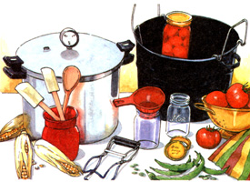
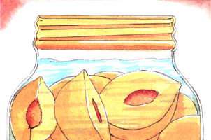

Issue # 175 - August/September 1999
GARDEN AND YARD
BELLA HOLLINGWORTH
Pressure canning equipment includes glass jars, an enameled canner with lid and a pressure canner
In an earlier issue, we covered "common" food storage-age-old, low-tech, nonelectric ways of holding easy to keep foods over winter or longer. You may recall that such traditional techniques rely on the the sun or woodstove to dry perishable items like fresh fruit, while inherently more resilient foods like root vegetables go into naturally cold, below-ground storage. In this article, we'll discuss 21st-century adaptations of a slightly more technical off-grid food storage technique: heat/vacuum canning in glass and metal containers. We'll also take a peek at some of the more modern, electricity-dependent methods of freezing, vacuum packing and inert-gas packing.
Keep in mind, however, that whether our means are traditional or high-tech, in trying to preserve food much after harvest, we're picking a family feud with Mother Nature. We're meddling in her marvelous life-giving process, frustrating the role of her recycling agents-the myriad of hungry beasts, bugs, bacteria, yeast and molds-that have evolved to churn the no-longer-living back into elemental plant nutrients so that they (we) may complete the circle of life by helping to nurture succeeding generations.
Your processing and storing facility should be as close to operating-room sterile as you can get it. First, sterilize your apparatus (including your own hands) as thoroughly as possible. We keep a pump bottle of antibacterial soap at the kitchen sink and wash hands and arms well.
All work surfaces-sinks and the cutting board included-are scrubbed with a chlorine-containing scouring powder and rinsed well with boiling water (drawn from the big black-and-white-speckled enamel canner that's kept filled with water and at a high boil). All plastic and stainless steel implements are boiled in the canner for a half hour or so, then wrapped in a clean towel. (If the water shows an oil slick on top, replace it and vow to clean the tools better in the future.)
Our finer-edged-than-stainless carbon steel butchering knives must be oiled to prevent rust, and most have oiled-wood handles that would be ruined in a sterilizing bath. So along with a whet stone, we dip each blade in boiling water after a final sharpening. Canning jars or freezer containers are washed if needed and sterilized for at least ten minutes in a fresh charge of simmering (180°F) water, then either placed upside down on a sterile air-dryer or left in the hot water till pulled out for filling. Canning lids should be heated in hot water, but not boiled.
Food with a natural or induced acid content that measures 4.5 or less on the pH scale will keep bacteria and fungus spores from multiplying to harmful levels.
The most popular at-home food preservation technique is heat/vacuum canning of garden vegetables and fruit. It can get very involved, but we lack space here to discuss much more than the basics and tender a few practical insights. Specifics for preserving garden produce are given in the chart, "Preserving Vegetables and Fruits,"
If you are new to gardening and can ning, please don't think that you have to store all of the produce that comes from the far-too-big gardens most people initially plant. Having to confront bushels of green beans and ripe tomatoes and endure clouds of steam all weekend, every weekend, during already steamy August and September is enough to diminish most anyone's enthusiasm.
And you can't can for posterity; fresh produce declines in taste, not to mention vitamin and mineral content, if saved much beyond six months in home storage of any kind. If exposed to light and kept too long, canned beets bleach to pink and the water surrounding green beans becomes darker than the vegetables themselves. We won't try to describe what happens to the color and flavor of canned spinach or mustard greens.
The steps to modern canning are straightforward:
Put popping-fresh food without a sign of blemish in a sterile canning jar.
Add fluid to within a half inch or so of the top to give proper air space.
Put on a dome lid that is screwed down snug, but loose enough to let air escape.
Place the jar and its contents in a boiling-water bath or a pressure canner for a specified amount of time (specific to the produce and determined by years of kitchen experience and widely disseminated USDA tests).
Boil long enough to cook produce through and kill all decay microorganisms. During boiling, the contents expand, pushing air out of the jar. When things starts to cool, the heat-softened rubbery inner lip of the lid is puffed down and seals to the rim of (unchipped) jars. Contents shrink. A vacuum is created, preventing ambient air from entering and introducing airborne bacteria and mold spores. This vacuum must be preserved until the product is eaten.
The advice to use only perfect foods is fairly recent; apparently some Aggie School Ph.D. candidate has discovered that mold, mouse or bug damage to fruits and vegetables can extend well beyond the obvious harm. And it makes some sense. Certainly, that sunken black spot on an otherwise perfect-appearing tomato can indicate fingers of black fungus rot that extend throughout the fruit. Still, the perfect-foods-only rule will be hard for organic gardeners to obey, since it often takes a peck of poison to guarantee absolutely blemish-free foods. Thanks, but no thanks. We'll skip the sprays and stay with the common sense rule to cut away all damage inside and out.
Food can be sterilized and vacuum-sealed in simple boiling water or in the higher temperatures of live steam developed in a low-pressure (5 to 15 psi) canner.
Water simmers at 180°F, hot enough to kill most bacteria. At a full boil, it reaches 212°F (at sea level). That is hot enough to kill all yeasts, molds and bacteria, but not the spores (the dormant form-like tiny seeds) of some of the most dangerous. Foods with a natural or induced acid content that measures 4.5 or less on the pH scale will keep those bacteria and fungus spores from "hatching" and multiplying to harmful levels. What this means is that boiling and vacuum-sealing in a hot water bath will safely preserve only naturally acidic foods. These include most fruit (including red, acid tomatoes), fermented krauts and pickles acidified with vinegar or lemon juice.
No matter that Great Grandmother put up everything in the oven, an open steamer, a common boiling-water canner or by adding aspirin to the jars; food poisoning was much more common in the not-so-good old days. Nowadays, as once-regionalized pathogens are being airmailed all around the globe, safety demands that nonacid products, including most vegetables, all meats and acid/no-acid mixtures, be pressure-cooked. From sea level to 1,000 feet above, water/steam reaches 250°F under ten pounds of pressure (15 pounds at higher elevations). That's ten degrees more than necessary to kill all molds and bacteria, as well as their boiling-heat-resistant spores. At 15 pounds of pressure at sea level, water/steam reaches 250°F-sufficient enough to sterilize anything held at temperature for two hours while cooking the toughest haunch of rogue bull elk.
During the 1970s, the definition of "acid" and "nonacid" came into question. Pink, yellow and white "low-acid" tomatoes were introduced. Their bland eating quality was touted by seed sellers and the gardening establishment, but none of the USDA or self-appointed food industry watchdogs realized that their acid content was too low for safe hot-water bath canning. Some home gardeners who'd permitted the hegemony of the USDA to relieve them of their native common sense put up low-acid tomatoes by normal hot-water bath rules. Some became victims of the virulent neurotoxin generated by several strains of Clostridium botulinum: potentially fatal botulism.
These days the experts recommend adding lemon juice to canned tomatoes regardless of their natural acidity: another case of government's classic one-cure-fits-all approach to problems. Some cool summers, my tomatoes are more sour than a lemon to begin with.
If you've any doubt whether your food is acid enough to be preserved safely in a boiling-water bath, here's a tip from MOTHER'S favorite food-safety gurus, Dr. Shirley J. VanGarde and Professor Margy Woodburn of the food science faculty at Oregon State University: Taste test it (or have your kids test it with their sharp senses). To be safe, Professor Woodburn and Dr. VanGarde say that food must be perceptibly more sour than a mix of half water and half common 5% kitchen vinegar. Either that, or assure it has a pH of less than 4.5 on a test kit or a hydroponic acidity-test meter.
If your product seems too sour, add sugar. Don't add water, as you may dilute the acidity too much (tomatoes only register about 4.0 on the pH scale).
Most organisms that attack preserved foods cause only an upset stomach if consumed, but thankfully most make their presence unpleasantly obvious before then. For instance, you can see mouse droppings on storage shelves and gnawed holes in bagged rice. And if you don't notice the little gray adult moths escaping when you open a container of contaminated mulled grain, you'll see the mealworms and their hard brown cocoons or feel their nasty little web-clots in the flour.
Most molds, yeasts and decay bacteria produce obvious changes in odor, color, general appearance or taste in a home-preserved product. Inside a canning jar, they will generate a foul-smelling gas that destroys the vacuum, pushing up the dome of the canning lid, often foaming and forcing spoiled product out from under the lid. Discard any jar you so much as suspect of having lost its vacuum. Bury it deep.
That said, not all dangerous decay organisms give themselves away. Spores of the bacterium. Clostridium botulinum usually take eight to 48 hours to incubate and produce dangerous levels of botulin, a toxin that if left unchecked can cause victims to develop flu-like symptoms and quit breathing anywhere from two hours to two weeks after ingestion. However, some strains of C. botulinum that feed off of carbohydrates rather than proteins may not alert you to their presence. They don't discolor the food or emit a strong enough odor to overpower the smell of, say, sauerkraut, and they may not produce enough gas pressure to pop a dome lid.
C botulinum is a ubiquitous bacterium that lives quietly in soil or fresh water, waiting for conditions that allow it to perform its recycling role. An anaerobic bacterium, it thrives in the total absence of oxygen, as in waterlogged swamps, septic tanks, our guts-and in vacuum-packed food containers processed at too low a temperature or for too short a time.
The bacterium incubates in moderate temperatures of 39°F to 122°F-its ideal temp being about 90°F The botulin toxin cannot develop at normal refrigeration temps of below 40°F or at cooking temps of 140°F and up. Even if present in a food, the microbes and their toxin are totally destroyed after ten minutes of boiling, or upon being heated to bubbling at 200°F or higher in a hot oven. My mother boiled all her home-canned food for ten minutes...using a huge, old, clanking spring-wound timer...and at dinner we all got a lecture on the horrors of botulism-a triumph of (beneficial) federal government propaganda of the 1920s and '30s, when the FDA set out to teach country folks good nutrition and soil-conserving contour farming. This always made me feel like Henry Fonda playing Tom Joad in John Ford's movie of Steinbeck's Grapes of Wrath, when the family reaches that CCC camp with its FDR-like director.
Happily, botulism is extremely rare-in most years less than 200 cases are reported nationwide and half of these in large blocks from restaurant food-and has an 80% survival rate. It's curable if treated early (preferably at onset of symptoms, including sick stomach, blurred vision and difficulty breathing) at a health facility equipped with a stomach pump and botulin antitoxin. As we've all heard, the most common source of food poisoning is a picnic salad made from chicken, say, or potatoes that are cooked and kept lukewarm for hours before serving. The mayonnaise in such salads is tart but not acid enough. Moral: keep food either too hot to touch or refrigerator-cold. If you aren't planning to eat it immediately after it's cooked, refrigerate nonacid food...especially in the heat of summer.
Then, to be doubly sure, cook all nonacid canned food for at least ten minutes at a rolling boil or bake till it bubbles in a 350°F oven or till an oven thermometer with its probe in the middle of the food mass reads at least 200°F. Oregon State's Dr. VanGarde advises against trusting a microwave oven to heat anything through all the way-even if a built-in probe reads high enough. Also note that an acid food must be acid all the way through. Be especially wary of boiling-water-only canning of pickled sausages, fish or pigs feet and pickled hard-root vegetables such as carrots and beets; they may not absorb sufficient pickling liquor all the way through. Follow reliable, published recipes as well as canning ingredients and times precisely. But be wary of processing methods and times in any recipe from a source dated before the mid 1980s. (Thankfully, many of the old gardener's home-preserving books you may remember from the '60s and '70s-books with intentionally quaint titles like Putting By the Harvest -have since been updated to modern standards and republished.)
I used to put by our harvest with only passing attention to the rules till our children arrived. In the Dr. Spock baby-book studying phase, we learned that (despite its vaunted antibiotic principle) unpasteurized (raw, organic) honey contains C. botulinum spores. Added to bottled formula it can produce enough toxin inside a baby's innards to result in severe, though usually nonfatal, infant botulism. (For nutritional as well as botulism-control reasons, the rule now is to avoid feeding honey-raw or pasturized-to any child less than a year old.)
The big, old hot-water bath canner was relegated to sterilizing bottles, jars and tools, and I have actually canned everything in a pressure canner. The high heats don't seem to phase the quality of the high-acid products. Plus, cooking times are shorter and there is much less steam to contend with. But with my mother's dire botulism speech and its overtones of dust-bowl poverty and famine forever in mind, I still boil everything home-canned for at least ten minutes before eating.
We like to freeze the occasional wild treat for a special occasion - as when we catch a sea trout or salmon from a tidal stream or happen across a cache of wild mushrooms or berries.
Salmonella and most other relatively common food-borne bacterial illnesses (botulism notably excepted) usually result in little more than a brief gastrointestinal upset in healthy people. The potentially fatal ones- Listeria and E. Coli.: Serotype 0151:H7-largely restricted to raw meat and unpasteurized milk products. All of the microbes are deterred by modern kitchen sanitation measures, and they and their toxins are defanged by proper cooking temperatures and times.
Severe fungal infections from food are exceedingly rare, caused in the main by contamination of wet-stored stock feed or food grains. However, some common refrigerator molds have been found to produce dangerous mycotoxins. Research on mold in home-preserved food is scanty and controversial, and documented harm to humans is even more so. Nevertheless, some common molds have been shown to produce toxins that persevere even after you've scraped the mold and top inch off the strawberry jam you kept in the fridge too long. The best advice is to toss out any food showing mold growth, the exceptions being high salt country ham, blue or Brie type cheeses or tempeh.
To prevent molds in preserved foods, keep them cool and open to air circulation. Pack goods in the cold cellar loosely. Don't keep any preserved food where it can heat and expand enough to seep.
Don't be tempted to maximize the storage by filling the top. In canning, the empty space is as important as the lid.
Get your canning jars in quart and pint sizes at any country hardware store in late summer. Buy them by the case and keep the cardboard boxes to store the containers after use, once they are washed well and covered with new lids. If storing jars in a cellar or shed, wrap the cartons in a trash bag to keep out moisture, dust, spiders and other crawlers.
You will need a big white-speckled black or blue enameled canner with a lid and canning rack ($20 or so at most mall discount stores). These will rust where they dent and enamel chips off, but otherwise last forever or, in my case, till stepped on by the cow. The rack holds canning jars separate and has handles for all-at-once lifting in or out. It also keeps glass bottoms from breaking over the fire and can be loaded with seven standard pint or quart jars. Some are sold as steam-juicers (for over $100 in stainless steel) or cheaper enamel soft shell clam steamers. These have a drain spigot at the bottom, plus a sieve-bottomed double boiler that is also good for steam sterilizing and blanching produce for freezing or drying.
You'll also want a widemouthed funnel that fits inside Ball/Kerr jars, makes filling easier and eliminates the possibility of leaving dribbles on the rim, which can compromise sealing of the lids.
Throw in a pair of heavy-duty rubber gloves to work in scalding temperatures, a set of jar tongs, a rim-tightening wrench, a magnetic lid-lifter and an accurate, loud timer. And most important: a modern pressure canner.
For years I used my mother's old Mirro-Matic canner, which needed a rot-inclined rubber gasket (now you can get replacements from the homesteaders' catalogs). It was a nuisance, but simplicity itself. Unlike other brands, it lacked a complicated gauge-type pressure regulator (you remember, the kind that clogged easily and needed annual recalibration by your overworked Cooperative Extension Service or County Agent). To control pressure, it had a nipple on the top, over which you put a simple disc-shaped weight with holes in three sides for each of three pressure settings. Once pressure was reached, it jiggled audibly to let out excess steam. You set the stove burner (or moved the canner over the woodstove range top) till escaping steam made it jiggle, then cooked your product till your timer went off. The Mirro also sported an ultra-simple meltable-metal emergency overpressure/heat protector.
We're glad to report that the premier modem quart-jar-high pressure canner, the gasket-free All-America brand made by Wisconsin Aluminum Foundry of Manitowoc, Wisconsin, and sold by all the catalogs, has adopted the jiggle-disc regulator and a simple overpressure plug. But it also retains a dial-type temperature gauge in case you need a precise pressure. And it has a trio of lock-down handles for the metal-to-metal sealing lids. These are less inclined to wear than lug-tightening lids and add a feeling of security for folks who remember the exploding pressure cookers of two generations ago.
Even if put up in tomato sauce, all meat and fish must be pressure canned. Follow an approved recipe to the letter.
Canned in nothing but water, meat will lose all flavor. The one suggestion we will make concerns preparing a hot broth for canning meat or fish. First, you will want to remove all fat, although this will leave the meat dry and relatively tasteless. Supply flavor with a rich broth. Do not thicken as for gravy, but make the pot liquor as flavorful as you can. Roast red meat to well done and keep hot. In the pan containing drippings, oven-brown and boil up the bones, trimmings and fat with onions, carrots and celery. Fill with water, add a bouquet of stew spices (thyme, a bay leaf and black pepper in a disposable sack) and cook down to a rich natural broth. Enrich and amplify with restaurant-grade stock base. I use the paste-type stock concentrate Redi-Base, available from gourmet food departments or by mail or Internet: Redi-Base, P.O. Box 846, Whitehall, PA 18052-08-16; www.redbase.com.
It comes in meat, poultry, fish and vegetable broth concentrates, regular and low salt. No moose, elk, bear or deer broths, but beef or veal stock moderates the gamy quality of these red meats. When stock is done, fill canning jars a quarter of the way, cut still-hot meat into chunks and pack it down into the stock to minimize bubbles. Fill the jar to within a half inch of the top. Put on domed lid and process at 15 pounds for two hours or less if your recipe directs.
Later you can put a jar of your canned meat and super-broth in a pot, add vegetables and a stock-thickener and have a super stew in an hour or two.
Running a conventional home freezer, especially an empty one, takes more electricity than I care to generate at my off-grid cabin. If you're in the same boat, you might try to rent a locker at a commercial freezing plant. The cost is minimal and they hold food at about -34°F-far better for quality retention than a home freezer's best of 0°F. Those low temps are also better for flash-freezing home-butchered and wrapped red meats that you harvest from the wild, raise and age yourself or buy in bulk.
Off-grid freezers are comparatively small, super-insulated and run high-efficiency compressors on AC or DC, propane or kerosene. They have to work hard to maintain an honest 0°F and have a hard time freezing warm food, But they do it-if only because a constant and sufficient supply of hard-frozen homemade ice cream is every committed off-gridder's bragging right. Even in the heat of mid-August-and even if the indoor plumbing isn't in yet.
Till our freezer is loaded with food, we keep its energy draw low by keeping it filled with chunks of river ice chipped and stored in vinyl-mesh sandbags or, if need be, bags of commercially frozen ice cubes driven up the mountain a few bags at a time from the nearest locker, at an alarmingly high speed, and wrapped in sleeping bags. The ice is removed and used, as produce is frozen to replace it.
In our view, some foods are ruined by canning or drying and so should be enjoyed in season or else preserved by freezing. These include asparagus, sweet green peas, snow peas, whole berries, melons (and for a winter treat, a little summer squash), spinach, kale, broccoli and cauliflower, as well as freshwater fish, including boned whole native brook trout from the stream and fillets of locally farm-raised striped bass and tilapia.
All products retain best quality if flash frozen immediately after harvest. Produce is gathered and washed in the chilly water of a mountain stream, then brought inside, where a big double boiler is making steam on the stove. The rest of the freezing process is illustrated below.
Thin fish fillets are frozen one thin layer deep in enough fresh water to just surround them in Ziploc's. For special occasions, we like to freeze the occasional wild treat like sea trout, salmon, wild mushrooms or berries. The fish is sliced dun and frozen in Ziploc's; wild mushrooms are sauteed in butter, cooled and also frozen in bags.
Berries are not blanched, but chilled and dried, then rolled in finely granulated sugar and put into plastic bags, which are flattened out to be frozen on the cold plate. I also freeze melon in thin slices on wax paper on the cold plate. Though not as crisp as when fresh, thawed along with the berries, they're a welcome treat in mid February.
Canning Jars
Vacuum and Nitrogen Packing
Preserving Vegetables And Fruits
|
 BELLA HOLLINGWORTH Pressure canning equipment includes glass jars, an enameled canner with lid and a pressure canner |
 Don't be tempted to maximize the storage by filling the top. In canning, the empty space is as important as the lid. |
|